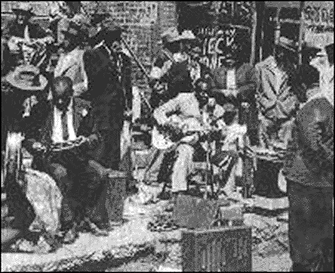

1925г.: "Maxwell Street Blues"
1925г.: "Maxwell Street Blues"
в исполнении Papa Charlie Jackson

Чикагская Максвелл-стрит… Где по выходным, на городском блошином рынке выступали Мадди Уотерс, Хаулин Вулф, Санни Бой Уилльсмсон, Эдди Бойд, Роберт-младший Локвуд… Да все великие чикагиане играли здесь - еще до того, как мир признал их великими. Шел акт творения современного городского блюза: не на облачном мягком ковре - на асфальте, не под ахи херувимов - под крики торгующихся, не в аромате райского сада - а в смешении шашлычного дыма с дымом масла, на котором жарится рыбка… Самый жаркий был рынок в приозерном городе ветров, словно не только свою музыку, но южный солнечный пыл привезли сюда выходцы с Миссиссиппи. И блюз вышел музыкой крепкой, ядреной и житейской… Более жизнестойкой, чем сама улица Максвелла… Дельту городского электро-блюза собираются сносить. Держать блошиный рынок расточительно для кап.города - супер-маркет и гранд-отель более доходны. Блюзовая общественность протестует, но машина антиблюзового благоустройства запущена и урчит по кабинетам, бюрократия крушит медленно, но верно. Не на площадях, а в клубах слушают блюз клерки…А блюз демократически звучал на Максвелл-стрит стрит еще до того, как Роберт Джонсон провидчески назвал Чикаго родным блюзовым домом. В августе нынешнего года 75 лет исполняется с тех пор, как Папа Чарли Джексон (Papa Charlie Jackson) записал свой блюз по улице Максвелл: "Maxwell Street Blues".
Видный блюзовед Гордон Бакстер призывает использовать этот юбилей во благо колыбели чикагского блюза. Для чего предлагает послать чикагскому мэру короткое письмо с протестом против разрушения Максвелл-стрит и поддержкой предложения внести ее в (американский) Национальный реестр Исторических достопримечательностей (National Register for Historic Places).
Адрес: Mayor Richard Daley
121 N. LaSalle Room 507
Chicago, IL 60602 USA
Факс: # 312-744-2324
Hopefully a flood tide of letters from across the world landing on the mayor's desk will finally open his eyes to the importance of Maxwell Street across the world. Please spread the word to as many people as possible.
Надеюсь, хотя бы поток писем, низвергающийся со всего света на стол мэра, наконец-то откроет ему глаза на всемирную значимость Максвелл-стрит. Пожалуйста, передайте это как можно большему колличеству людей.
Gordon Baxter
Особая благодарность Михаилу Бирюкову за предоставленную запись песни-юбиляра.
Загляни на его сайт "Злого черного кота",
там уже более сотни портретов блюзмэнов
эпохи довоенного блюза.